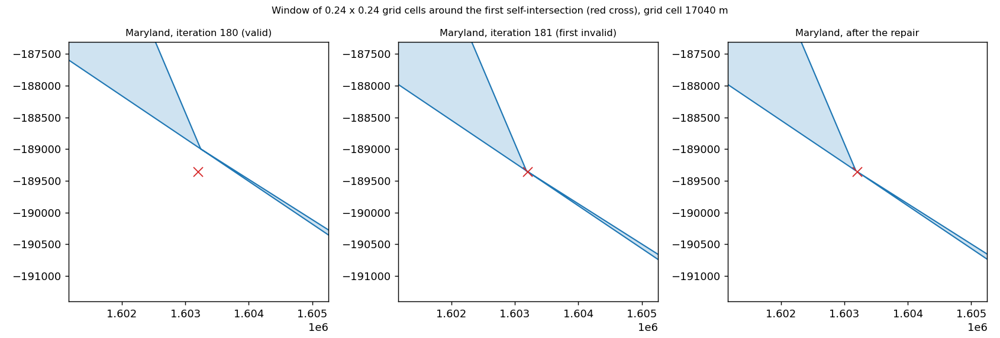

A narrow channel of a region can close during the morph so that its boundary crosses itself, and the returned region is then not a valid polygon. Output regions are now made valid by default (area change 0.0003 % to 0.24 % in the typical cases), Cartogram.invalid_regions lists them, and partition_geometries repairs invalid input with a warning instead of returning wrong parts.
make_figures.py regenerates the figure and data/tables.md; the counties rows run when COUNTIES_PARQUET points at a GeoDataFrame file with total_votes and geometry.
Vertices move independently, so a channel of a region that is much narrower than a grid cell can close until one bank passes the other and the boundary of the region crosses itself. The returned region is then not a valid polygon; nothing in the result said so, and anything downstream (overlays, exports, partition_geometries) can misbehave. Issue 85 shows it for Maryland on the minority-population map: the morph converges, the output is invalid from iteration 181 on, and partition_geometries returns empty parts for it without an error.
Maryland (issue 85) is valid up to snapshot 180 and invalid from snapshot 181 of 233. At the crossing the closest pair of non-adjacent vertices of the previous iteration is 0.0174 grid cells apart; the vertices there move 0.0204 cells per iteration (maximum 0.0227). The crossing is 0.000 cells from the ring of the part it belongs to (771 vertices, 562 cells^2).
The input geometries are valid in every run below; the crossings come from the morph.
| run | status, iterations | invalid regions | regions with another part count after the repair | area change of the repaired regions: median / max | check + repair time (ms) |
|---|---|---|---|---|---|
| states, grid 256 | converged, 112 | 0 of 49 | 5.5 | ||
| states, grid 512, 0.2 % / 0.4 % | converged, 229 | 0 of 49 | 5.6 | ||
| districts, grid 256 | converged, 145 | 12 of 432 | 9 | 0.0178 % / 0.179 % | 36.1 |
| districts, grid 256, 0.5 % / 1 % | converged, 160 | 12 of 432 | 9 | 0.0274 % / 0.240 % | 35.3 |
| districts, grid 512, 0.5 % / 1 % | stalled, 310 | 19 of 432 | 11 | 0.0027 % / 7.678 % | 40.9 |
| issue 85: minority population, simplified states, grid 512 | converged, 234 | 1 of 49 | 1 | 0.0003 % / 0.000 % | 13.2 |
| counties, grid 256 | stalled, 210 | 7 of 3108 | 3 | 0.0002 % / 0.037 % | 28.4 |
| counties, grid 512 | completed, 300 | 51 of 3108 | 35 | 0.0169 % / 2.915 % | 53.9 |
The states stay valid in every run tried; the districts and the counties end with 12 to 51 invalid regions at the larger grids and the tighter tolerances (the stalled district run at grid 512 is the exception to the small area change: one region changes by 7.7 %). Most repairs leave the part count of a Polygon region unchanged; a region with a pinched lobe of zero area loses the lobe, and a bowtie becomes a MultiPolygon of two parts. The check is one shapely.is_valid call per morph and the repair touches only the invalid regions; both are included in the time column.
MorphOptions.repair_output (default True) makes the returned geometries valid. The stored iterations (snapshots, animations of the whole run) are not repaired.Cartogram.invalid_regions lists the indices that were invalid in the returned iterate (repaired or not).repair_output=False the output is returned as computed and a warning names the number and the first indices of the invalid regions.partition_geometries repairs invalid input geometries with shapely.make_valid and warns with the rows; it returned empty or wrong parts before.
Maryland of the issue's map, a window of 0.24 x 0.24 grid cells around the first self-intersection (red cross). Left: the last valid iteration, a narrow wedge between the banks of an inlet. Middle: the vertex has crossed the opposite bank. Right: after the repair.